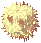
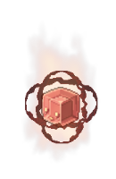
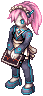
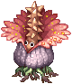

Hidden Flower Garden
(Redirected from Hidden Garden)
Jump to navigation
Jump to search
| This quest or instance is repeatable. | ||
|---|---|---|
| Cooldown | Tickets Available | |
|
Resets at 0:00 |
Solo: 0 | Party: 0 |
Overview
| Requirements | |
|---|---|
| Base Level: | 130 and 180 |
| Starting Point: | |
| Prerequisite(s): | Gaining access to Varmundt's Mansion |
| Rewards | |
| Experience: | - |
| Items: | Quest: 20  Varmeal Tickets Varmeal TicketsFirst Security Area: 5 Varmeal TicketsSecond Security Area:
|
The Hidden Flower Garden is part of the Episode 17.2, check out the Sage's Legacy for more information. You have to complete the story version of the instance before proceeding to the daily versions. The daily versions are split in both level 130 and 180.
Story Quest
- Go near and the Security Area Entry Officer will appear.
- Talk to her and select Self-authentification to generate the instance. Talk to her again to enter.
- Speak with the hologram at the entrance and select Input pattern on touchscreen. If there is an error, keep repeating the Input pattern on touchscreen or the Enter a different pattern options, the hologram is a big buggy.
- Watch the cutscene and then talk to the NPC. Select Yes, I agree to proceed and then choose a name for her.
- Talk to her again and comment on the place. Watch the next cutscene and you'll be warped to the next area.
- Talk to her again and follow her.
- Click on CAROTA-88 and select any option. You'll be warped to the next area.
- Talk to her again.
- Talk to Pimp (the NPC running around the box) and select How long have you managed this place?. After the cutscene, you'll be warped to the next area.
- Talk to her again and select Please continue.
- Defeat the 3 Security Dolls.
- Talk to her again and select What were those automatic dolls? > What was that? > Is the Flower Garden a security zone? > Tell me the real purpose of this place. > Is the security area nearby? > Take me to the security area. You'll be warped to the Security Room after the cutscene.
- Talk to her again and move down until you meet "Varmundt".
- You can then talk to "Varmundt" once the automatic doll leaves.
- Keep following Sigma around and talk with him when he stops. You'll have to keep talking with him a dozen times.
- You will be rewarded with 20 Varmeal Tickets.
- Talk with Sigma again and you will be warped out.

Daily quest
- Go near and the Security Area Entry Officer will appear.
- You can choose between the First Security Area for level 130+ or the Second Security Area for level 180+. They are the same, except with harder mobs.
- Kill all enemies in the first area. The enemies will spawn after every few seconds after which a portal will appear to go to the next area.
- Repeat the same step until you reach the Security Room.
- Speak with the Red Pepper to start the boss fight. Beware that you have to be in the same screen as the mvp dies to get your rewards.
- Once defeated, a portal on the left side will appear.
- Talk to NPC to get your reward, 5 Varmeal Tickets for the First Security Area and 15 Varmeal Tickets for the Second Security Area.
If you're doing the Second Security Area, you'll also get one of the following reward randomly:- 1
 Automatic Module Box and 10 Varmeal Tickets (Common Reward)
Automatic Module Box and 10 Varmeal Tickets (Common Reward) - 1~5
 Magical Soapstones (Uncommon Reward)
Magical Soapstones (Uncommon Reward) - 1
 Epic Module Box (Rare Reward)
Epic Module Box (Rare Reward)
- 1
Enemies
First Security Area
| Image | Name | Level | HP | Size / Race / Element |
|---|---|---|---|---|

|
Research Assistant | 137 | 238,512 | Medium / Formless / Neutral 2 |
|  | Dried Rafflesia | 140 | 248,245 | Small / Plant / Earth 3 |

|
Special Alnoldi | 143 | 255,483 | Medium / Plant / Poison 2 |
|  | Kappa
|
135 | 9,500,000 | Large / Formless / Fire 3 |
Second Security Area
| Image | Name | Level | HP | Size / Race / Element |
|---|---|---|---|---|
|  | Greater Research Assistant | 187 | 2,398,802 | Medium / Formless / Neutral 2 |

|
Greater Dried Rafflesia | 190 | 2,908,909 | Small / Plant / Earth 3 |
|  | Greater Special Alnoldi | 193 | 2,954,324 | Medium / Plant / Poison 2 |

|
Lambda
|
185 | 300,000,000 | Medium / Formless / Dark 3 |
Cards
First Security Area
| Card | Type | Effects |
|---|---|---|
| Shoes Card |
| |
| Shoes Card |
| |
| Shoes Card |
| |
| Armor Card |
|


Second Security Area
| Card | Type | Effects |
|---|---|---|
| Weapon Card |
| |
| Weapon Card |
| |
| Garment Card |
| |
| Armor Card |
|